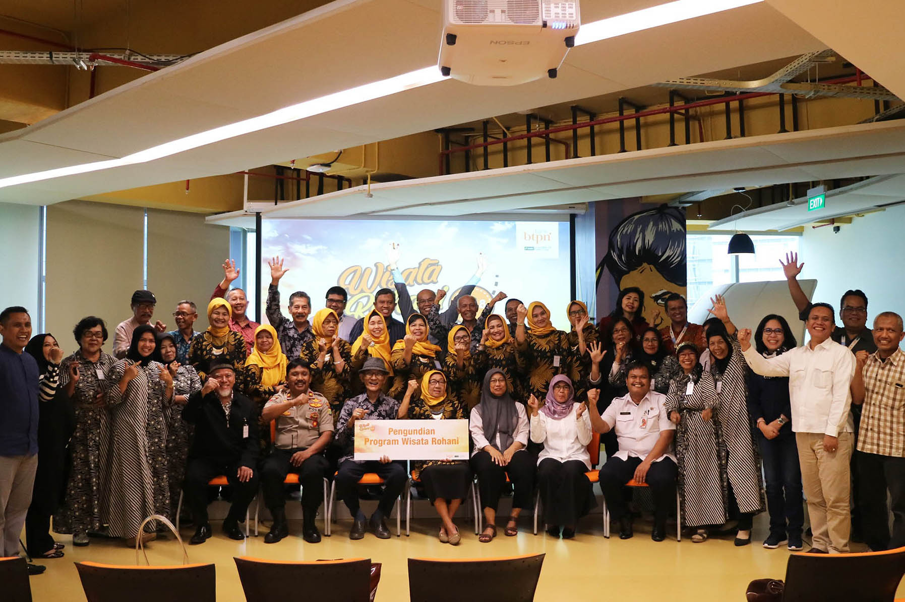

02 MEI 2019
12 Nasabah Bank BTPN Menjadi Pemenang Undian Berhadiah Wisata Rohani

Melanjutkan komitmen untuk mendorong kesejahteraan hidup para
pensiunan, Bank BTPN melakukan pengundian pemenang program Wisata
Rohani periode tahun 2018 untuk nasabah purnabakti.
Pengundian dilaksanakan pada Rabu, 6 Februari 2019 di Lantai 27 Menara
BTPN Jakarta. Selain dihadiri oleh perwakilan Manajemen Bank BTPN,
pada acara ini turut hadir perwakilan Kementrian Sosial Republik
Indonesia, Dinas Sosial Provinsi DKI Jakarta, Kepolisian Republik
Indonesia wilayah Jakarta Selatan, Notaris, serta 24 orang nasabah
dari Jakarta dan sekitarnya.
Dibuka oleh Head of Pension Business Vincetius Hidayat, pengundian ini
juga disaksikan secara live streaming oleh nasabah di kantor cabang
Bank BTPN Bandung, Yogyakarta, Surabaya, Malang, Palembang, Medan,
Banjarmasin, Makassar dan Manado.
Program Wisata Rohani adalah bentuk apresiasi yang diberikan oleh Bank
BTPN untuk nasabah purnabakti, yang dilaksanakan secara rutin setiap
tahun sejak 2009. Para pemenang muslim akan mendapatkan hadiah
perjalanan umroh ke Arab Saudi, sementara pemenang non-muslim akan
mendapatkan hadiah perjalanan sesuai agamanya masing-masing. Nasabah
pemenang tidak perlu mengeluarkan biaya apapun karena seluruh
kebutuhan mereka ditanggung oleh Bank BTPN.
Pada pengundian kali ini, didapatkan 12 nama nasabah pemenang yang
beruntung akan melaksanakan Wisata Rohani bersama pasangannya. Mereka
adalah:
Rubinem, nasabah Bank BTPN KCP Tebing Tinggi
Ermanida, nasabah Bank BTPN KCP Solok
Tiah, nasabah Bank BTPN KC Balikpapan
Yunimar, nasabah Bank BTPN KCP Kramat Jati
Oom, nasabah Bank BTPN KCP Cimahi
Siti Rochanah, nasabah Bank BTPN KCP Burangrang
Kamari, nasabah Bank BTPN KCP Slawi
Mini, nasabah Bank BTPN KCP CIlacap
Mislan, nasabah Bank BTPN KCP Bojonegoro
Kasmini, nasabah Bank BTPN KCP Blitar
ST Zainab Aly K, Hj, nasabah Bank BTPN KC Makassar
Dirk Atang Rampengan, nasabah Bank BTPN KC Manado
Semoga program Wisata Rohani ini bisa memberi manfaat dan membuat
hidup para nasabah pemenang menjadi lebih berarti.
BERITA TERBARU

12 Nasabah Bank BTPN Menjadi Pemenang Undian Berhadiah Wisata Rohani ...
SELENGKAPNYA ⟩